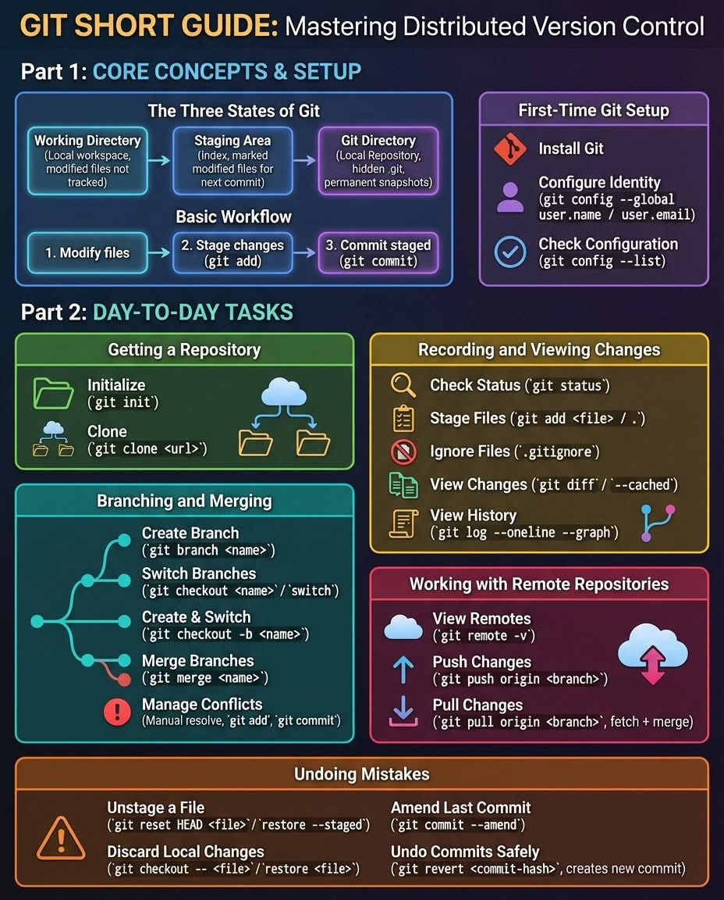

Code & workflow
GitHub, command line, and disciplined delivery.
My development workflow uses Git and GitHub for branching, version control, collaboration, review, and traceability across both individual and team projects.

Workflow mindset
I use version control as an engineering tool, not just a backup mechanism: small changes, clear history, structured branching, reviewable commits, and repeatable workflows make software easier to understand and safer to evolve.
GitGitHubGitLabBranchingPull requestsCode reviewCLI